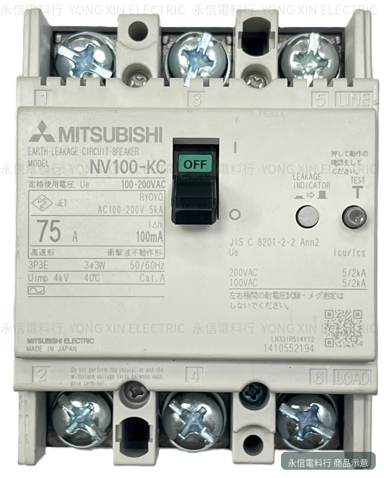

商品照片已套用永信電料行全圖浮水印；點選縮圖可切換角度。
 三菱電機 MITSUBISHI ELECTRIC
三菱電機 MITSUBISHI ELECTRIC漏電斷路器（ELCB）｜NV100-KC 系列
NV100-KC 3P／75A
實物銘牌可確認本品為 Mitsubishi Electric NV100-KC 漏電斷路器，3P 3E、額定電流 75A、額定感度電流 100mA。替換前請同步核對原設備回路用途、感度電流、安裝尺寸與下游負載狀況。
系列NV100-KC
極數3P3E
額定電流75A
漏電感度100mA
Icu / Ics5 / 2 kA
商品照片1 張
規格核對提醒
本頁依實物銘牌整理可辨識資料，並參考三菱電機 NV100-KC 官方產品資料補充系列共通規格。ELCB 不能只看安培數替換，仍應核對完整型號、額定感度電流、動作特性、極數、適用電壓、安裝尺寸與回路故障狀況。
本網站不顯示即時庫存與價格；實際供應、交期與替代可行性請另行確認。
PRODUCT OVERVIEW
產品用途與核對重點
- 產品類型：漏電斷路器（ELCB）。
- 完整型號：NV100-KC，實物本件額定電流為 75A。
- 銘牌重點：3P 3E、100mA、100-200VAC、3φ3W、50/60Hz。
- 現場判斷：若出現火花、瞬間跳脫或漏電指示動作，應先釐清是漏電、短路／過電流，還是端子／本體異常。
- 維修替換：建議提供舊品正面、銘牌、端子與配電盤照片，以利核對。
NAMEPLATE INFORMATION
商品資料整理
品牌三菱電機 Mitsubishi Electric
系列／型號NV100-KC
極數3P 3E
額定電流75A
額定感度電流100mA
額定使用電壓100-200VAC
適用回路3φ3W，50/60Hz
Icu／Ics5 kA／2 kA
衝擊耐受電壓Uimp 4 kV
使用類別Cat.A
動作類型高速形／衝擊波不動作形
產地Made in Japan
商品照片1 張
上述資料依本頁實物銘牌整理；Icu／Ics、動作類型與部分系列資訊並參考三菱電機 NV100-KC 官方資料交叉補充。若現場回路條件不同，仍應以完整型號之最新原廠文件與本件實物標示為準。
VERIFIED SPECIFICATION DATA
詳細規格
產品型式WS-V Series 漏電斷路器（ELCB）／NV100-KC
本頁實物可確認3P 3E／75A／100mA／100-200VAC
官方系列補充Icu 5 kA、Ics 2 kA、Uimp 4 kV、Cat.A
替代比對重點完整型號、極數、額定電流、感度電流、外型尺寸、端子方向與回路用途
即使同為 NV100-KC，仍須核對感度電流、極數與回路條件；ELCB 自動跳脫也不必然只代表漏電，可能涉及短路、過電流或端子／本體異常。 系列共通資料僅用於補充辨識，不取代完整型號之原廠規格書與本件實物銘牌。